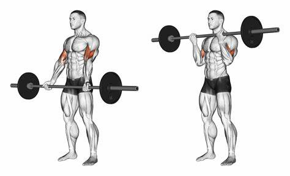

Peito
- Supino reto
- 4 séries de 12 repetições
- Descanso: 60 segundos
- Execução: Deite-se no banco e segure a barra com as mãos afastadas. Abaixe a barra até o peito e empurre de volta.

- Supino inclinado
- 4 séries de 12 repetições
- Descanso: 60 segundos
- Execução: Realize o movimento de forma similar ao supino reto, mas com o banco inclinado em um ângulo de 30-45°.
- Crucifixo
- 4 séries de 15 repetições
- Descanso: 60 segundos
- Execução: Deite-se em um banco plano com halteres, abra os braços em um ângulo de 90° e junte os halteres acima do peito.
.jpg)
- Flexões
- 3 séries de 20 repetições
- Descanso: 60 segundos
- Execução: Com as mãos no chão, ombros alinhados com as mãos, abaixe o corpo até o peito tocar o chão e empurre de volta.
.jpg)
- Peck Deck
- 4 séries de 12 repetições
- Descanso: 60 segundos
- Execução: Sentado na máquina, empurre as alavancas até que as mãos se toquem, mantendo o peito contraído.
Costas
- Remada unilateral
- 4 séries de 12 repetições
- Descanso: 60 segundos
- Execução: Com um haltere, apoie um joelho e a mão no banco, e puxe o haltere em direção ao tronco.
- Barra fixa
- 4 séries de 10 repetições
- Descanso: 90 segundos
- Execução: Segure a barra com as palmas das mãos voltadas para frente e puxe o corpo até que o queixo ultrapasse a barra.

- Remada baixa
- 4 séries de 12 repetições
- Descanso: 60 segundos
- Execução: Puxe a barra em direção ao abdômen com os cotovelos próximos ao corpo.
Bíceps

- Rosca direta
- 4 séries de 12 repetições
- Descanso: 60 segundos
- Execução: Segure a barra com as mãos afastadas e levante-a até os ombros.
- Rosca martelo
- 4 séries de 12 repetições
- Descanso: 60 segundos
- Execução: Com os halteres, mantenha as palmas voltadas uma para a outra e levante os pesos até os ombros.
Tríceps
- Tríceps testa
- 4 séries de 12 repetições
- Descanso: 60 segundos
- Execução: Deitado em um banco, segure a barra e abaixe-a em direção à testa, estendendo os braços em seguida.
- Tríceps na polia
- 4 séries de 12 repetições
- Descanso: 60 segundos
- Execução: Puxe a barra ou corda para baixo, estendendo totalmente os braços.
Ombro
- Desenvolvimento com barra
- 4 séries de 12 repetições
- Descanso: 60 segundos
- Execução: Empurre a barra acima da cabeça até os braços ficarem totalmente estendidos.
- Elevação lateral
- 4 séries de 15 repetições
- Descanso: 60 segundos
- Execução: Levante os halteres lateralmente até a altura dos ombros.
- Desenvolvimento Arnold
- 4 séries de 12 repetições
- Descanso: 60 segundos
- Execução: Segure os halteres na frente do rosto e, ao levantar, gire os pulsos para fora até os braços ficarem estendidos.